(Case Criativo) BID Fase 2 · Alpargatas

O presente que encontra quem compra.
Havaianas Aura · Dia das Mães 2027 · Lojas próprias, franquias e varejo
Havaianas pra presenteNovas Havaianas AuraLojas própriasFranquiasVarejo12 de abril de 2027
Havaianas pra presenteNovas Havaianas AuraLojas própriasFranquiasVarejo12 de abril de 2027
Sexta-feira, 8 de maio de 2027. 12h40.
Ela tem quinze minutos de almoço, não sabe o número que a mãe calça e ainda não comprou nada.
Ela não vai sair procurando presente.
O presente é que precisa encontrar ela.
Capítulo 01 de 11
O desafio
O que vocês pediram, e como a gente entendeu o pedido.
- 01O pedido em uma página
- 02O que cada canal precisa
- 03Como a gente leu
Levar a Aura para a data mais emocional do varejo.
O que precisa ser feito
Pegar a campanha global da Aura e trazer para o Dia das Mães, sem perder o jeito Aura de ser.
A mensagem
Havaianas pra presente. E, logo em seguida, Novas Havaianas Aura.
Para quem
Mulheres de 25 a 45 anos, das classes A, B e C, que já amam Havaianas e gostam de um detalhe bonito sem pagar caro.
Quando
Nas lojas de 12 de abril a 10 de maio de 2027. No varejo, as peças precisam estar no ponto de venda em 19 de abril.
Como vamos saber se deu certo
Se a marca ficou mais forte, se as pessoas falaram da campanha e, claro, se vendeu.
Por que vai dar certo
Havaianas é líder, a mulher é apaixonada pela marca e está pedindo novidade.
O que a consumidora contou nas pesquisas
O brilho faz diferença
O detalhe de metal na tira faz ela aceitar pagar mais.
Pedra é elegância
As pedrinhas passam sofisticação e são muito valorizadas.
Elegante é simples
Pra ela, elegância é um desenho limpo, em que cada detalhe parece pensado.
Vai para mais lugares
Com enfeite, o chinelo sai da praia e entra em outros momentos do dia.
Fonte: [BID] Briefing Criativo Aura · Dia das Mães 2027, Alpargatas, e pesquisas de features da Havaianas de 2025 e 2026.
Três canais, três jeitos de chegar ao mesmo presente.
DTCLojas Próprias
- Uma mesa logo na entrada, o Big Hello, com o KV e as caixas de presente
- O KV levado também para as prateleiras
- Sacolas, luvas e envelopes
- Vitrine e cenografia, com uma ação especial no mezanino da Oscar Freire
Na loja em 12/04/2027
DTCFranquias
- A mesa com as caixas de presente da marca, tudo bem limpo
- A mesa da Compacta 4 como ponto de partida
- Outras versões do KV nas prateleiras
- Kits de presente, com tecido e fita, pra quem leva a embalagem
Na loja em 12/04/2027
B2BVarejo
- No supermercado: stopper, testeira, moldura, tag, wobbler, placa de carrinho, pontas e ilhas
- A Aura perto de outros produtos, pra vender junto
- Bastante chinelo exposto, pra compra por impulso
- Mais tempo de preparo, porque depende de negociar com as redes
No ponto de venda em 19/04/2027
Fonte: [BID] Briefing Criativo Aura · Dia das Mães 2027, pontos de Franquias, Lojas Próprias e B2B.
Presente se compra em três tempos. A loja precisa ajudar nos três.
0s
Pra reconhecer
De longe ela já entende: é Dia das Mães, é Havaianas e tem presente ali.
vitrine · ponta de gôndola · ilha · placa de carrinho0s
Pra escolher
As três cores lado a lado, como numa joalheria, com preço e numeração à vista. Sem precisar chamar ninguém.
mesa Big Hello · expositor de prateleira · moldura0min
Pra levar pronto
Caixa, fita, cartão e sacola na hora de pagar. Ela sai da loja com o presente embrulhado.
estação de presente · embalagens · cartãoCapítulo 02 de 11
Como a gente chegou aqui
O passo a passo da criação, num prazo bem curto e sem pular nenhuma etapa.
- 01Dia a dia
- 02O que a gente estudou antes
- 03Referências e o que vimos no mercado
O KV chegou na segunda, às 18h30. A entrega era na sexta, às 17h.
0dias úteis entre o briefing e a entrega, com um feriado no meio
0pessoas no time do case: direção, criação, 3D, tráfego e atendimento
0hde trabalho no case: as 6 pessoas dedicadas a ele, do briefing à entrega
0imagens aprovadas, depois de 5 rodadas de ajuste
0desenhos técnicos para a fábrica, que seguem sendo ajustados
17/11seg18/11ter19/11qua20/11feriado23/11seg24/11ter25/11qua26/11qui27/11sex · 17h
ConviteApresentação do caseBriefing por e-mailKV e guia · 18h30Entrega · 17h
Fonte: e-mails da Alpargatas de 17, 19, 23 e 24/11/2026 e os registros do time da 75 LAB no case.
Antes de desenhar, a gente estudou a marca, quem compra e a loja.
O que a marca diz
94%dos brasileiros têm um par
200 milpontos de venda no país
70 pontosna frente do concorrente em lembrança
O guia da marca pede alegria, humor e calor. Nem frio e minimalista, nem exagerado.
O que a consumidora diz
- O brilho na tira faz ela aceitar pagar mais
- Pedra é sinal de elegância
- Elegante é desenho limpo
- O enfeite leva o chinelo para mais lugares
Por isso a Aura aparece como joia: um par por moldura, com espaço em volta.
O que a loja de verdade faz
- Logo vermelho grande na fachada
- Plaquinha oval de preço na ponta do gancho
- Numeração em etiqueta redonda e tabela de tamanhos
- Banco listrado de vermelho e branco
- No supermercado, faixa vermelha com um logo só
Antes de colocar a campanha, a gente deixou as lojas iguais às de verdade.
Fontes: Guide de Marca Havaianas, briefing Aura e fotos públicas de lojas, franquias e gôndolas Havaianas em 2025 e 2026.
Quatro referências, e o que cada uma ensinou.
Art déco brasileiro
As molduras das portas e janelas das casas antigas viraram o recorte de todas as peças.
A moldura é a marca.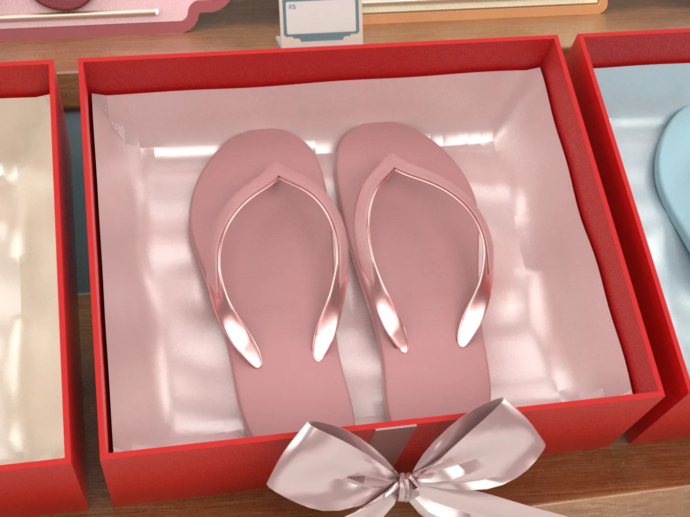
JoalheriaO pingente da Aura pede vitrine de joia: moldura, tecido e luz.
Um par por moldura. O presente pronto
O presente prontoCaixa vermelha da marca, fita na cor do chinelo e laço dourado.
A embalagem também vende.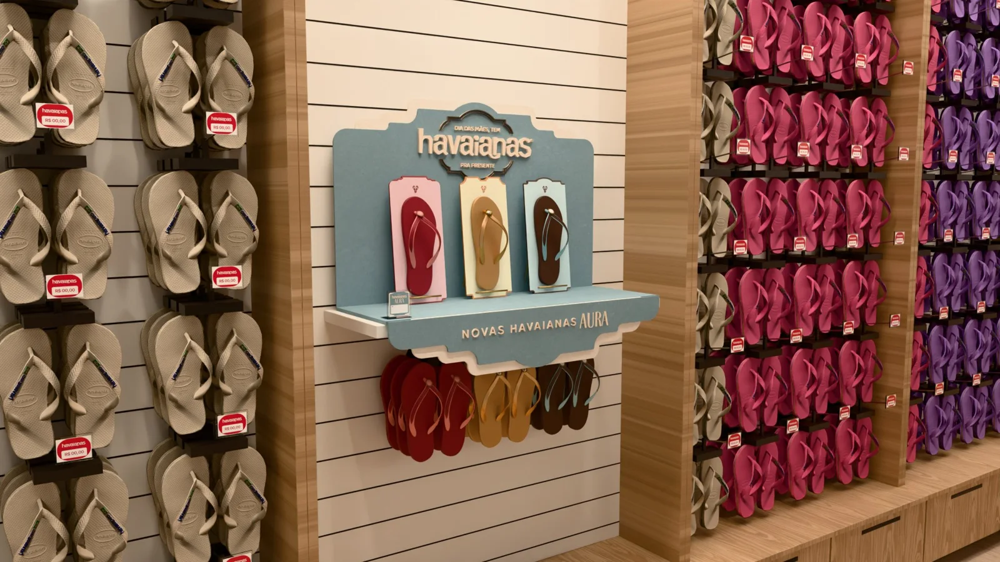
A loja HavaianasParede organizada por cor, logo vermelho e pouca informação.
A campanha entra e a loja continua Havaianas.
O que a gente viu no mercado
Presente se escolhe pela corVer as três cores juntas faz ela decidir mais rápido.
Preço à vista ajudaPlaquinha de preço em todo par e etiqueta em toda cor.
Embrulhar faz parteQuem sai com o presente embrulhado não desiste no caixa.
No supermercado, quantidade vendeMuito chinelo ao alcance da mão, até fora do corredor de calçados.
Fontes: briefing Aura (moodboard e design system) e observação de pontos de venda pela 75 LAB.
Capítulo 03 de 11
Do KV da Aura ao KV da loja
Como a gente transformou o KV que vocês mandaram em comunicação de ponto de venda.
- 01O KV que chegou
- 02Os quatro ajustes
- 03A ordem de leitura
- 04Do maior ao menor
Onde tudo começou
Recebemos um KV de lançamento.
O KV global da Aura: os três chinelos em cartões art déco sobre o azul, o logo new havaianas Aura e uma frase em inglês.
O que já funcionavaO azul, os cartões art déco e a foto dos chinelos. Isso a gente manteve.
O que faltava pra dataFalar de presente, em português, numa frase que se lê em dois segundos.
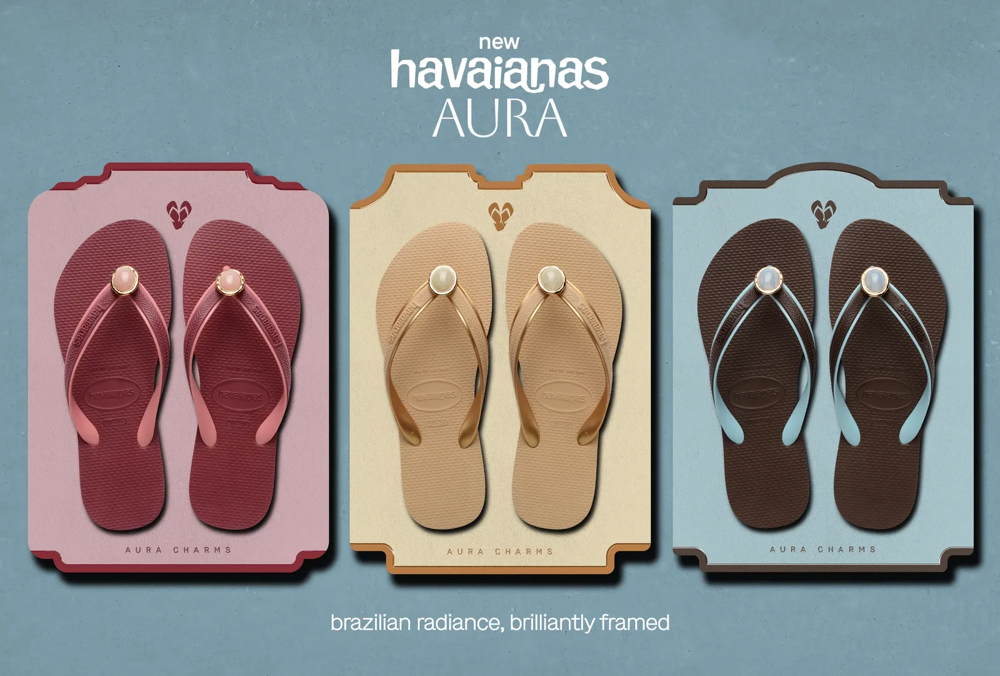
Quatro ajustes e o KV passou a falar de presente.
 1234
1234
O recorte art déco dos cartões virou o contorno das testeiras, do adesivo da vitrine e das laterais.
Sai o inglês e entra “Dia das Mães, tem Havaianas pra presente”. Data, marca e solução numa frase só.
A moldura em volta do logo junta a frase e a marca, e funciona sozinha nas peças pequenas.
“Novas Havaianas Aura” desceu para o rodapé, pra não brigar com a data.
KV da loja criado pela 75 LAB a partir do KV global da Aura enviado pela Alpargatas em 23/11/2026.
Uma ordem que vale pra todas as peças
Marca, data, produto, lançamento.
- 1MarcaHavaianas é sempre o maior elemento, dentro do selo.
- 2Data“Dia das Mães, tem … pra presente” abraça a marca.
- 3ProdutoOs chinelos nas molduras, de frente pra quem compra. A Aura é o presente.
- 4LançamentoNovas Havaianas Aura, no rodapé de cada peça.
Na loja ninguém para pra ler: a pessoa bate o olho e entende. Por isso a ordem nunca muda de uma peça para outra.
1234O mesmo selo funciona de 2,6 metros a 15 centímetros.
A gente não redesenhou a campanha em cada peça. Usou as mesmas regras em todos os tamanhos, e é isso que deixa a loja própria, a franquia e o supermercado com a mesma cara.
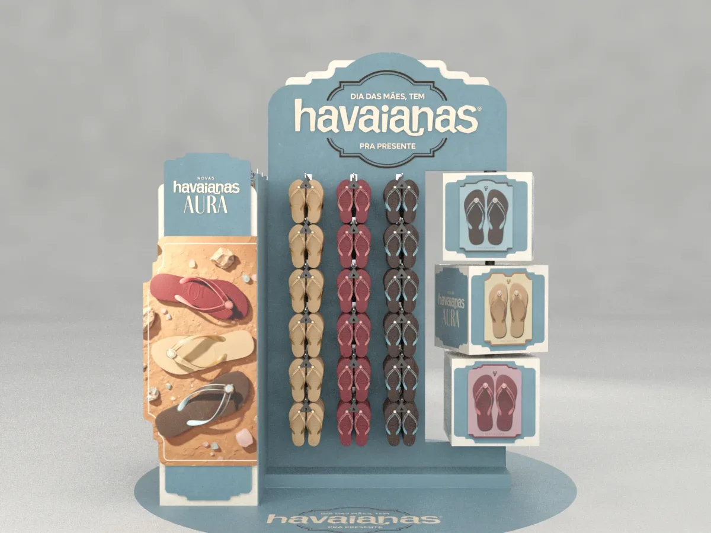


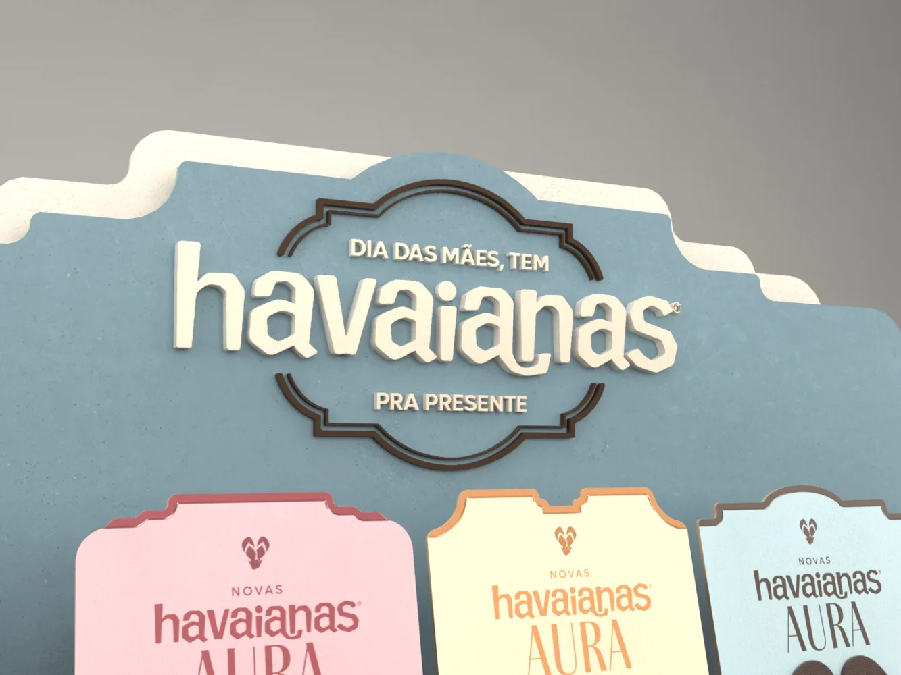

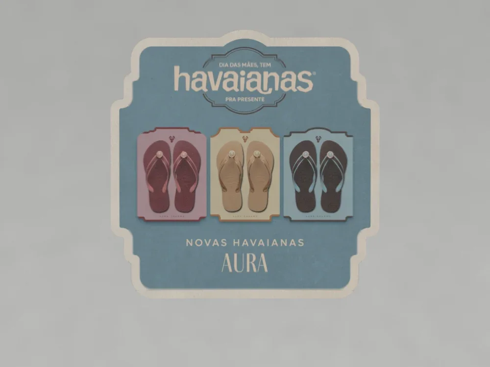


Quando tem espaço pra foto, a moldura abre uma janela com a Aura no pé. O selo, as molduras e a assinatura continuam no mesmo lugar.
Capítulo 04 de 11
Por que cada peça está ali
As ideias de marketing e de varejo por trás de cada escolha, contadas sem complicação.
- 01Sete ideias, sete decisões
- 02O caminho do presente
Nenhuma peça está ali por enfeite. Cada uma tem um motivo.
As referências de cada ideia estão no próprio quadro.
Ver, parar, escolher e levar. Cada canal tem uma peça pra cada passo.
1Verchama a atenção
2Parardesperta o interesse
3Escolherdá vontade
4Levarfecha a compra
DTC
Lojas Próprias
Lojas Próprias
Fachada e vitrine
Mesa Big Hello
Expositor de prateleira
Estação de presente e embalagens
DTC
Franquias
Franquias
Vitrine
Big Hello na mesa da loja
Expositor e caixotes
Estação de presente e sacola
B2B
Varejo
Varejo
Placa de carrinho e testeira
Ponta de gôndola e ilha
Moldura, wobbler e tag
Fita de chinelos e muito produto no gancho
É o velho caminho da atenção até a compra, levado pra dentro da loja: cada peça faz um trabalho só, e nenhuma atrapalha a outra.
Modelo AIDA (atenção, interesse, desejo e ação), de E. St. Elmo Lewis, citado em Kotler e Keller, Administração de Marketing.
Capítulo 05 de 11
DTC Lojas Próprias
Uma loja de rua com a campanha inteira: onde cada peça fica e por quê.
- 01A loja vista de cima
- 02A loja pronta
Cada peça no ponto certo do caminho.
 entrada
entradaA loja própria no dia 12 de abril.
As peças aprovadas
Imagens da 75 LAB: as peças aprovadas montadas numa loja de rua em 3D, com a comunicação igual à das lojas Havaianas.
Capítulo 06 de 11
DTC Franquias
Uma loja de shopping: a campanha entra na mesa e na parede que a franquia já tem.
- 01A loja vista de cima
- 02A loja pronta
O dinheiro do franqueado onde a venda acontece.
 corredor do shopping
corredor do shoppingA franquia pronta pro Dia das Mães.
As peças aprovadas
Imagens da 75 LAB: as peças aprovadas montadas numa loja de shopping em 3D. A vitrine de vidro foi colocada na frente aberta da loja para receber a peça.
Capítulo 07 de 11
B2B Varejo
Hipermercado e supermercado: bastante produto, compra por impulso e a Aura perto de outros produtos.
- 01O hipermercado visto de cima
- 02O corredor visto de cima
- 03O varejo pronto
A ilha chama quem passa no corredor principal.
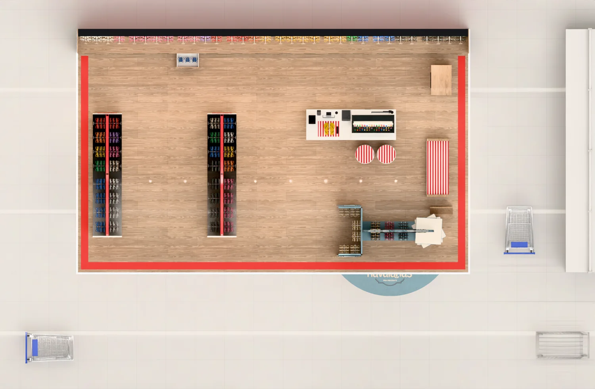
corredor principal do hipermercadoA Aura dentro e fora do corredor de calçados.
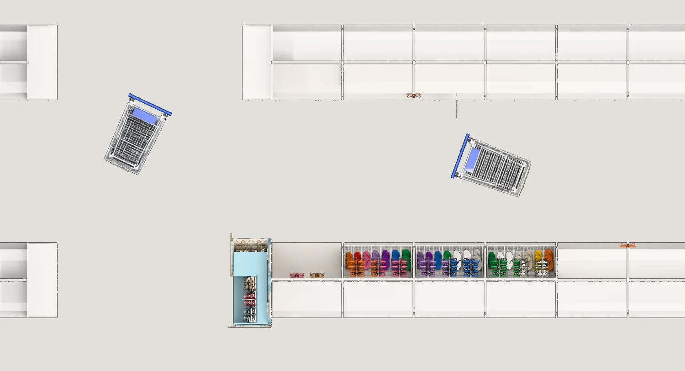
corredor principalNo varejo, produto na mão e presente em todo canto.
As peças aprovadas
Imagens da 75 LAB: as peças aprovadas montadas num espaço de hipermercado e num corredor de supermercado em 3D.
Capítulo 08 de 11
Do desenho à fábrica
Os desenhos técnicos, que seguem em andamento, e como a gente cuida da produção até a peça chegar na loja.
- 01Os desenhos técnicos
- 02Da gráfica até a loja
Pensada pra fábrica, não só pra ficar bonita na imagem.
Mesa Big Hello202 × 109,5 × 194,4 cm · base em camadas, dois tampos de madeira e caixas de presentepronto, igual ao aprovado
Ilha232,9 × 128 × 263,5 cm · cubos que giram e adesivo de chãotrocando a foto das laterais
Ponta de gôndola120,5 × 53,2 × 237,1 cm · topo em relevo e laterais com fototrocando a foto das laterais
Peças de gôndolastopper, testeira, moldura, tag, wobbler, fita de chinelos e placa de carrinho, em plástico de 1 e 2 mmrecortes prontos
Embalagenssacolas em três tamanhos, caixas com luva e caixa envelope, já planificadasajustando a sacola
Vitrine e estação de presentevitrine de 3,7 m de largura e os módulos da estação de presenteindo para a versão aprovada
Expositor e mesas das franquiasmolduras em plástico, ganchos e a peça em L que veste a mesa da lojaem desenho
Cada desenho técnico leva para a fábrica
as duas versões de cormedidas e recorte em tamanho realmaterial e acabamento de cada partequantidades para orçaraproveitamento da chapacomo montar
Desenhos técnicos da 75 LAB para o case Aura: primeira versão de 24/11/2026, sendo ajustada para as imagens aprovadas em 25/11. Materiais e quantidades ainda em orçamento.
Da gráfica até a loja, sem desperdiçar a verba no caminho.
Compra por material
A gente junta as peças por material e negocia o volume, não peça por peça.
Três orçamentos
Toda peça tem três orçamentos, e vocês veem a comparação aberta.
Protótipo antes
A gente testa o protótipo antes do lote e confere cada lote antes de liberar.
Um kit por loja
Cada loja recebe um kit separado, com a lista do que veio e o guia de montagem.
Entrega por canal
Lojas próprias em ondas, franquias no Brasil todo e varejo nos centros de distribuição das redes.
QR em cada peça
Mostra quando chegou e quando foi montada, com foto, e ajuda a acertar a quantidade da próxima vez.
Como a gente cuida de cada verba
Lojas PrópriasVitrine e cenografia que podem ser usadas de novo no mezanino e na próxima campanha.
FranquiasPeças que vestem a mesa que a franquia já tem. O franqueado não compra móvel novo, compra comunicação.
VarejoPeças leves, que viajam em envelope, e estrutura grande só onde vende volume: ponta e ilha.
Processo de produção da 75 LAB.
Capítulo 09 de 11
Como a gente organiza o trabalho
O sistema, a central da rede, o QR que acompanha cada peça e como vocês ficam sabendo de tudo.
- 01O nosso sistema
- 02A central da rede e o SharePoint
- 03O QR em cada peça
- 04O painel
- 05Como vocês acompanham
Cada pedido entra, sai e é aprovado no mesmo lugar.
PedidoEntregaAprovação
Sem senha: a pessoa abre o link da campanha e marca as peças. Já vem tudo separado por lojas próprias, franquias e varejo.
Quando a mesma peça vai para lojas diferentes, o sistema separa uma por tamanho. Assim não chega mesa grande em loja pequena.
O time coloca a arte dentro da própria peça, e cada versão fica guardada com data e autor.
Vocês aprovam ou marcam o ajuste em cima da arte, com número, seta, destaque e anexo.
Aprovado, esperando vocês, em ajuste ou em criação. E o tempo de aprovação de vocês aparece separado do nosso.
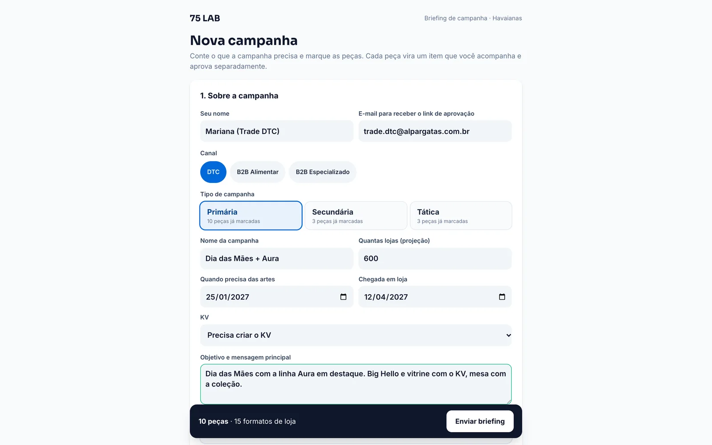
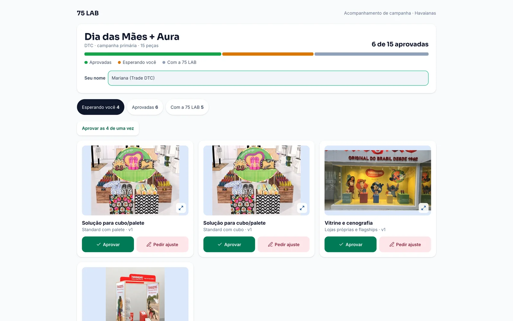
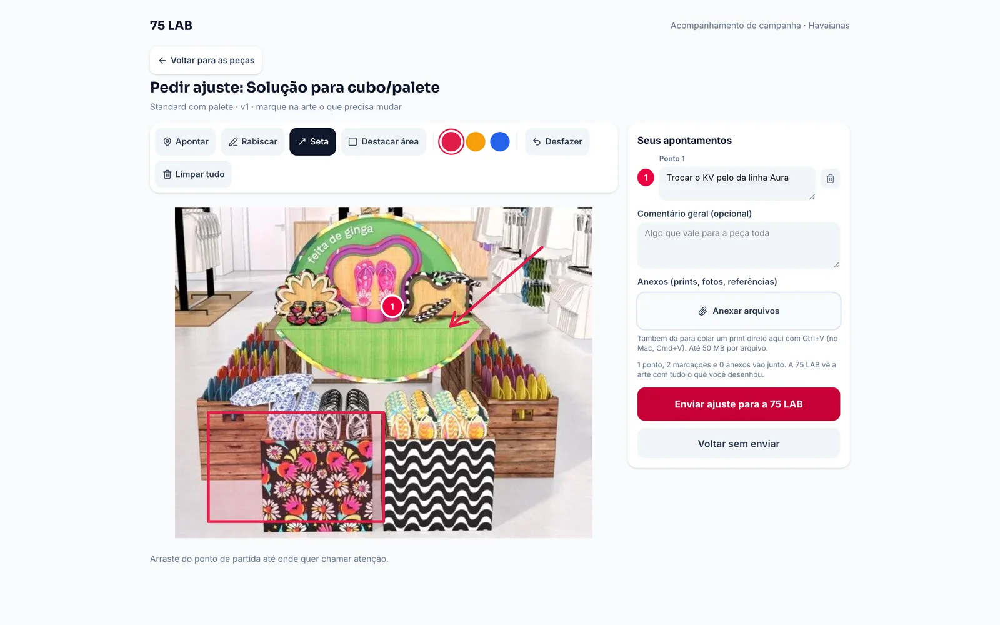
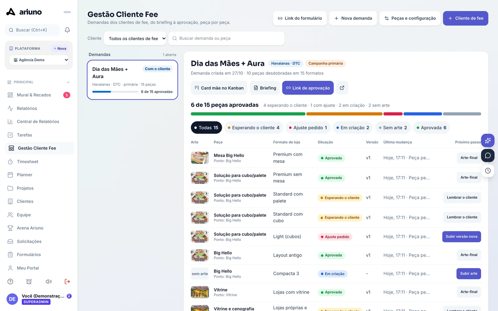
Passo 1 de 5
Ariuno em modo de demonstração, com uma campanha de exemplo de Dia das Mães + Aura.
Um lugar só para a rede, pra gente e pra vocês.
E-mail e WhatsApp numa caixa só. Cada conversa com franqueado vira um chamado da loja, com prazo.
Cada loja com tamanho, planta, fotos e os pontos onde a comunicação aparece.
Lojas próprias, franquias e varejo no mesmo calendário.
Os arquivos ficam no SharePoint de vocês, organizados por campanha, tipo de loja e loja.
Onde cada campanha está, e um relatório que chega sem ninguém pedir.


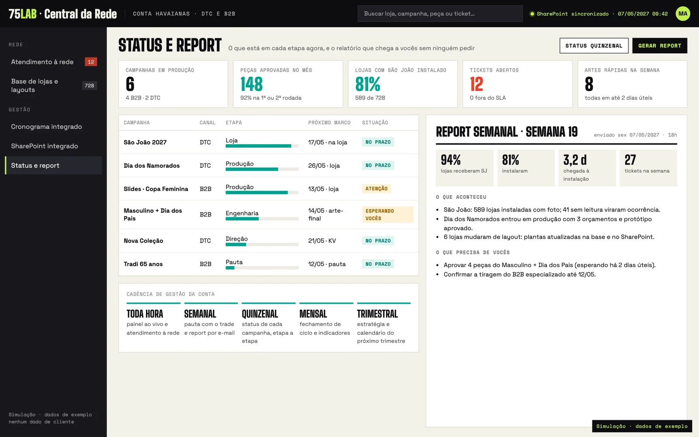
Simulação da central da 75 LAB com dados de exemplo · nenhum dado de cliente.
Cada peça tem um código e conta a própria história.
HAV-DM27-BHL-0128Big Hello · Dia das Mães 2027 · loja 0128
1 · Código na peça
Cada peça sai da gráfica com a própria etiqueta, e não um QR igual pra todas.
2 · Saída
Quando sai do fornecedor, a leitura registra o que foi para cada loja.
3 · Chegada
A loja lê o código quando recebe. Em dois dias a gente sabe quem recebeu.
4 · Montagem com foto
Montou, tirou foto, com localização. Em uma semana está tudo registrado.
5 · Conferência
A gente confere uma amostra das lojas e vai atrás de quem não leu.
6 · Painel
Tudo ao vivo, por loja, rede, tipo de loja e estado.
QR em etiquetapara o material de campanha, em quantidadetesteira, wobbler, stopper, tag, fita de chinelos, placa de carrinho
GPS ou bluetoothpara peça cara, que voltamesa Big Hello, estação de presente, ilha, ponta de gôndola, cenografia
Já funciona hojea leitura abre a página da peça, com montagem e vídeo, e registra loja, localização e fotoo sistema está no fee; só a etiqueta é material de produção
A leitura chega ao painel na hora, com localização e foto.
Clique nas abas para trocar a vista


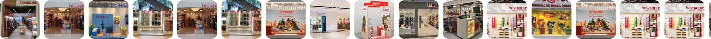
- Cada leitura guardaa loja, a rede, quem leu, a localização e a foto da fachada.
- Uma loja, uma contagemleituras a até 150 metros contam como a mesma loja. O painel conta lojas, não cliques.
- O varejo no dia 19 de abrilnesse dia o painel mostra quantos pontos de venda já estão com a Aura, rede por rede.
- Excel e link ao vivotudo em Excel num clique, e o trade acompanha por um link, sem senha.
Painel do QR da 75 LAB em modo de demonstração · dados de exemplo, nenhum dado de cliente.
Vocês sabem onde cada coisa está sem precisar perguntar.
Todo diapainel ao vivo, atendimento à rede e a situação de cada peça
Toda semanaconversa com o trade de cada canal e relatório por e-mail
A cada 15 diascomo está cada campanha, com os riscos e as decisões
Todo mêsfechamento do mês, os números e o que dá pra melhorar
A cada 3 mesesrevisão da estratégia e o calendário seguinte
O que a gente mede do nosso trabalho
- Prazo de cada entrega, com o tempo de aprovação de vocês separado
- Quantas vezes cada peça voltou para ajuste
- Peça certa, na loja certa, no dia certo
- Quantas lojas montaram, medido pelo QR
- Quanto custou cada loja e cada peça montada
O que a gente mede junto com vocês
- Venda da Aura nas lojas com campanha, comparada com as lojas sem
- Se a marca ficou mais forte e se falaram da campanha
- Venda das embalagens e dos kits de presente
- Giro do feminino no varejo
Acompanhamento pelo Ariuno e pelo painel do QR. Os resultados de negócio são os do briefing: força da marca, conversa sobre a campanha e venda.
Capítulo 10 de 11
O time e como a gente cobra
Quem cuida de cada frente, o que cada pessoa faz e como o preço é formado. Os valores ficam só no open cost enviado pelo COUPA.
- 01Quinze pessoas
- 02Quem faz o quê
- 03As três frentes
- 04Como a gente cobra
- 05Os impostos e a reforma
- 06O que o fee paga e o que fica fora
Quinze pessoas, todas só para a conta de vocês.
0pessoas no time
0delas em tempo integral na conta
0horas de trabalho por mês
Ninguém desse time divide o tempo com outro cliente. Quem atende mais de uma frente aparece em cada uma com a sua parte do mês, e não é contado duas vezes.
E o tamanho do time não é chute: saiu das 11.060 horas que o nosso time registrou entre julho e outubro de 2026, aplicadas ao volume que vocês descreveram no escopo.
Lojas PrópriasFranquiasB2B Varejo
Quem faz o quê, e como a gente mede cada pessoa.
Funções, divisão entre as frentes e horas iguais às do open cost enviado pelo COUPA. 176 horas por mês equivalem a uma pessoa em tempo integral.
Três frentes, três times. E cada uma tem um motivo.
A direção de criação é a mesma nas três frentes, de propósito: é ela que faz a loja própria, a franquia e o supermercado falarem a mesma língua.
Um fee mensal fixo. E nada além dele.
O mesmo valor todo mêsNo mês leve e no mês pesado. É isso que mantém o time pronto para quando várias campanhas acontecem juntas.
Zero honorário, zero agenciamento, zero comissãoNenhum percentual sobre produção, mídia, frete ou compra de terceiros, em nenhuma linha da proposta.
A conta aberta, linha por linhaCada pessoa no open cost com cargo, tempo dedicado, horas, custo, despesas, impostos e margem.
Como o preço de cada pessoa é formado
O custo do timeo valor das notas de quem trabalha na conta
+
As despesas fixasescritório, sistemas, administrativo e contabilidade, divididos pelo time
÷
O que sai da receitaimpostos e margem, cada um na sua coluna
=
O preçode cada pessoa, igual ao do open cost
Como impostos e margem saem da receita e não do custo, a margem que aparece no open cost é exatamente a margem que a 75 LAB ganha. Sem conta escondida e sem nota de rodapé.
Os valores estão só no open cost enviado pelo COUPA, como pede o convite da fase 2.
Os impostos, explicados antes de assinar.
RegimeLucro presumido
Toda a proposta foi calculada no lucro presumido, com os impostos numa coluna própria do open cost. Assim dá pra conferir a margem e o imposto separados.
Retenção na fonteNão é custo novo
Parte do imposto pode ser retida por vocês no pagamento. Isso só antecipa o nosso imposto: o total que a Alpargatas paga continua sendo o valor da nota. A gente fecha os detalhes com a contabilidade de vocês antes da primeira nota.
CréditoHoje não vira crédito
O PIS e a Cofins da nossa nota não viram crédito para vocês no regime de hoje. Com a reforma, isso muda.
A reforma tributária começa durante o contrato, e a favor de vocês
2026CBS e IBS só em teste
2027a CBS substitui PIS e Cofins
2029 a 2032ISS e ICMS diminuem aos poucos
2033só CBS e IBS
A CBS gera créditoA parte que hoje fica na nota sem crédito passa a ser crédito para vocês. O custo do serviço tende a cair pelo próprio desenho do imposto.
Nenhuma aposta no preçoA alíquota da CBS ainda não estava definida. O preço usa a carga de hoje, sem projeção.
Se a carga cair, o preço cai juntoA carga é revista a cada mudança de faixa, regime ou lei, com a conta aberta para vocês. Isso fica no contrato.
EC 132/2023 e LC 214/2025. As alíquotas e a memória de cálculo estão no open cost.
O que o fee paga e o que fica de fora.
Dentro do fee · o trabalho da agência
- estratégia de canal e direção de arte
- adaptação do KV para cada formato
- engenharia das peças e arquivo final
- imagens em 3D das lojas e das peças
- orçamentos, comparação e recomendação
- acompanhamento da produção e da logística
- acompanhamento da montagem nas lojas
- atendimento à rede e cuidado fiscal
- o rastreio inteiro: sistema, painel, códigos e ligação com a base de lojas
Fora do fee · pago direto ao fornecedor
- produção das peças
- distribuição e colocação no ponto de venda
- armazenagem
- mídia e veiculação
- licença de imagem, cachê e direito de imagem
- impressão do QR, que vai junto com a peça
- etiqueta de GPS, que é material
Tudo que fica fora tem pelo menos três cotações, comparação lado a lado e recomendação por escrito. A Alpargatas paga direto ao fornecedor, e a 75 LAB não cobra honorário, agenciamento nem comissão em cima.
Conforme as diretrizes 4 e 5 do convite da fase 2.
Capítulo 11 de 11
Cronograma
Montado de trás pra frente, a partir do dia da loja, com o tempo que o nosso time leva de verdade.
- 01Os três cronogramas
- 02As datas que não podem atrasar
Começando em 1º de dezembro, dá tempo, e com folga.
o tempo que a gente leva hoje, medido no nosso sistemaaprovação de vocês (4 dias úteis por rodada)estimadofolgaacontece ao mesmo tempo
Fonte: Ariuno, com 1.155 entregas feitas pela 75 LAB de julho a novembro de 2026. Feriados, aniversário de São Paulo e recesso de fim de ano já descontados.
Três datas seguram o Dia das Mães inteiro.
06/012027Vocês aprovam as peças e as imagens em 3D (05/01 para as franquias).
19/022027Vocês aprovam os protótipos (18/02 para as franquias). A produção começa em 18/02.
17/022027As franquias confirmam o que vão receber, e as redes fecham o espaço de ponta e ponto extra.
O que mais pode atrasar
A aprovação. Normalmente leva três dias e meio, mas às vezes passa de um mês. Uma terceira rodada de ajuste come toda a folga.
O que a gente propõe
- 4 dias úteis por rodada de aprovação, e no máximo 2 rodadas
- Aprovar as peças gráficas pela imagem em 3D, sem esperar protótipo
- Fazer as peças pequenas enquanto as grandes ficam prontas
- Produzir em 2 lotes, com as franquias primeiro
Fonte: Ariuno, tempo de aprovação de cliente em 24 entregas, de julho a novembro de 2026.
Domingo, 10 de maio de 2027.
A mãe abre a caixa vermelha, calça a Aura e sai para almoçar.
A campanha sai da loja em maio.
O presente fica.
É pra isso que a gente desenha o ponto de venda.
ComercialDaniel Coimbradaniel.coimbra@75lab.com.br
Operação e tradeCaique Beckercaique.becker@75lab.com.br
CriaçãoMauricio Oliveiramauricio@75lab.com.br


 ×
×